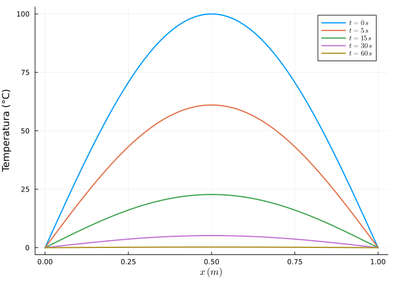
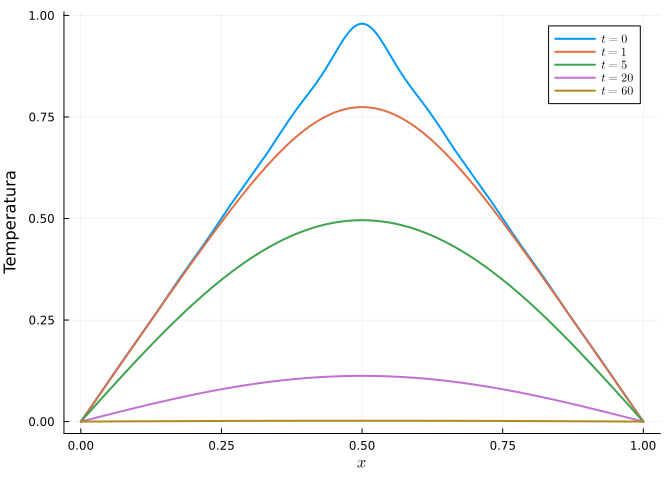
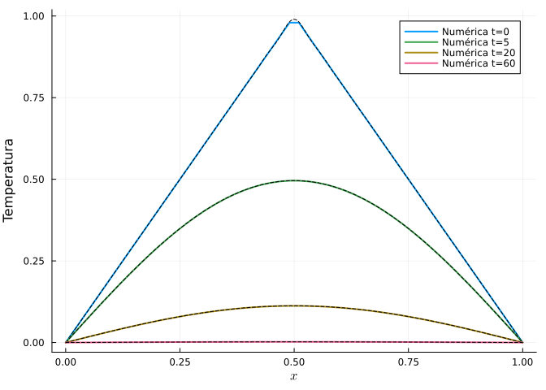
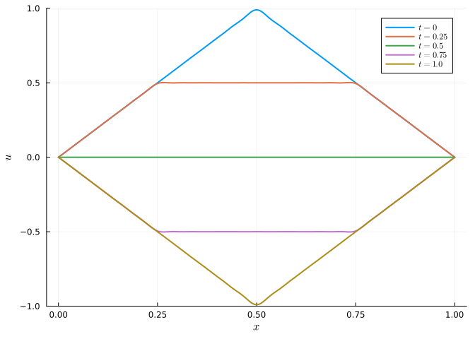
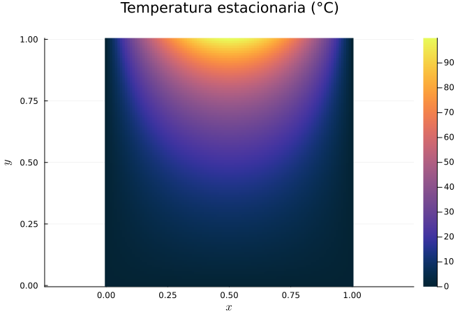
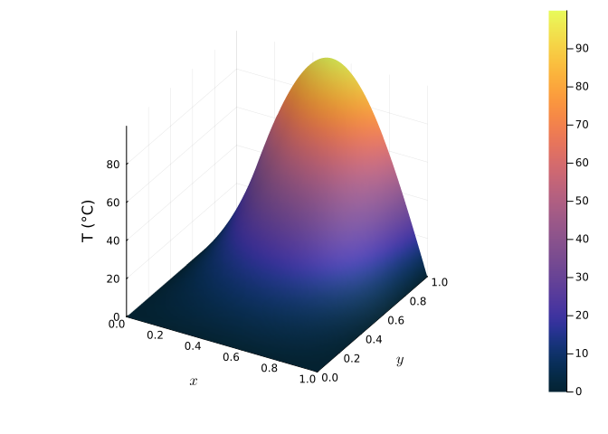

8 Ecuaciones en derivadas parciales de segundo orden. Método de separación de variables
Las tres EDP lineales de segundo orden fundamentales de la Física son:
- La ecuación del calor (parabólica): \(u_t = \alpha\,u_{xx}\), que describe la difusión.
- La ecuación de ondas (hiperbólica): \(u_{tt} = c^2\,u_{xx}\), que describe la propagación de perturbaciones.
- La ecuación de Laplace (elíptica): \(u_{xx} + u_{yy} = 0\), que describe estados estacionarios.
El método de separación de variables busca soluciones de la forma \(u(x,t) = X(x)\,T(t)\), lo que transforma la EDP en dos EDOs. Imponiendo las condiciones de contorno se obtiene un problema de autovalores (problema de Sturm–Liouville) cuyas soluciones \(X_n(x)\) se combinan en una serie de Fourier que ajusta la condición inicial.
8.1 Ejercicios resueltos
Para la realización de esta práctica se requieren los siguientes paquetes:
using SymPyPythonCall # Cálculo simbólico y coeficientes de Fourier.
using Plots # Dibujo de gráficas.
using LaTeXStrings # Código LaTeX en los gráficos.
using DifferentialEquations # Resolución numérica (método de líneas).
using SpecialFunctions # Función de error (erf) para Black–Scholes.
NotaVersiones de Julia y de los paquetes utilizados
Status `~/.julia/environments/v1.12/Project.toml` [0c46a032] DifferentialEquations v8.0.2 [b964fa9f] LaTeXStrings v1.4.0 [91a5bcdd] Plots v1.41.6 [276daf66] SpecialFunctions v2.8.0 [bc8888f7] SymPyPythonCall v0.5.1
Ejercicio 8.1 Ecuación del calor: enfriamiento de una barra metálica. Una barra de aluminio de longitud \(L = 1\) m, con difusividad térmica \(\alpha = 0.01\) m²/s, tiene sus extremos en contacto con hielo (\(u(0,t) = u(L,t) = 0\) °C) y una temperatura inicial \(u(x, 0) = 100\sin(\pi x)\) °C.
Aplicar separación de variables para hallar la solución analítica.
NotaAyudaCon \(u = X(x)T(t)\), la ecuación \(u_t = \alpha u_{xx}\) se separa en \(T' = -\lambda\alpha T\) y \(X'' = -\lambda X\). Las condiciones de contorno dan los autovalores \(\lambda_n = (n\pi/L)^2\) y autofunciones \(X_n = \sin(n\pi x/L)\). Como el dato inicial es ya \(100\sin(\pi x)\), solo interviene el modo \(n = 1\).
TipSoluciónSeparando variables, las soluciones fundamentales son \(u_n(x,t) = \sin(n\pi x/L)\,e^{-\alpha (n\pi/L)^2 t}\). La condición inicial \(100\sin(\pi x)\) coincide con el primer modo (\(n = 1\)), luego
\[ u(x, t) = 100\,\sin(\pi x)\,e^{-\alpha \pi^2 t} = 100\,\sin(\pi x)\,e^{-0.01\pi^2 t}. \]
Verificación simbólica:
using SymPyPythonCall @syms x t α = Sym(1)/100 u = 100 * sin(PI * x) * exp(-α * PI^2 * t) simplify(diff(u, t) - α * diff(u, x, 2))\(0\)
El residuo es 0.
Dibujar la evolución de la temperatura y calcular la constante de tiempo de enfriamiento.
TipSoluciónusing Plots, LaTeXStrings usol(x, t) = 100 * sin(π * x) * exp(-0.01 * π^2 * t) plt = plot(xlab = L"x \; (m)", ylab = "Temperatura (°C)") for τ in (0, 5, 15, 30, 60) plot!(plt, x -> usol(x, τ), 0, 1, lw = 2, label = L"t=%$τ \, s") end plt
La amplitud decae como \(e^{-t/\tau}\) con \(\tau = 1/(\alpha\pi^2) \approx 10.1\) s: cada modo se amortigua tanto más rápido cuanto mayor es su número \(n\) (los detalles finos se suavizan primero).
Ejercicio 8.2 Ecuación del calor con dato inicial general (serie de Fourier). La misma barra del ejercicio anterior, ahora con perfil inicial triangular
\[ u(x, 0) = \begin{cases} 2x & 0 \le x \le 1/2 \\ 2(1 - x) & 1/2 < x \le 1\end{cases} \]
Calcular los coeficientes de Fourier \(b_n\) del desarrollo en senos del dato inicial y escribir la solución en serie.
NotaAyudaLos coeficientes son \(b_n = 2\int_0^1 u(x,0)\sin(n\pi x)\,dx\). Calcularlos con
integratedeSymPy. La solución es \(u(x,t) = \sum_n b_n\sin(n\pi x)e^{-\alpha(n\pi)^2 t}\).TipSoluciónusing SymPyPythonCall @syms x n::(positive, integer) b(n) = 2 * (integrate(2x * sin(n*PI*x), (x, 0, Sym(1)/2)) + integrate(2*(1-x) * sin(n*PI*x), (x, Sym(1)/2, 1))) bn = simplify(b(n))\(\frac{8 \sin{\left(\frac{\pi n}{2} \right)}}{\pi^{2} n^{2}}\)
[simplify(b(k)) for k in 1:5]\(\left[\begin{smallmatrix}\frac{8}{\pi^{2}}\\0\\- \frac{8}{9 \pi^{2}}\\0\\\frac{8}{25 \pi^{2}}\end{smallmatrix}\right]\)
Solo sobreviven los armónicos impares: \(b_1 = \frac{8}{\pi^2}\), \(b_3 = -\frac{8}{9\pi^2}\), \(b_5 = \frac{8}{25\pi^2},\dots\) La solución es
\[ u(x, t) = \sum_{n \text{ impar}} \frac{8\sin(n\pi/2)}{n^2\pi^2}\,\sin(n\pi x)\,e^{-0.01(n\pi)^2 t}. \]
Dibujar la solución truncada a 20 términos en varios instantes y observar cómo la esquina inicial se suaviza instantáneamente.
TipSoluciónusing Plots, LaTeXStrings bnf(k) = 8 * sin(k*π/2) / (k^2 * π^2) usol(x, t; N = 20) = sum(bnf(k) * sin(k*π*x) * exp(-0.01*(k*π)^2*t) for k in 1:2:N) plt = plot(xlab = L"x", ylab = "Temperatura") for τ in (0, 1, 5, 20, 60) plot!(plt, x -> usol(x, τ), 0, 1, lw = 2, label = L"t=%$τ") end plt
En \(t = 0\) se reconstruye el perfil triangular con el fenómeno de Gibbs en el pico; para \(t > 0\) los armónicos altos se amortiguan enseguida (factor \(e^{-0.01(n\pi)^2 t}\)) y el perfil se redondea de inmediato: la difusión es un proceso fuertemente suavizante.
Ejercicio 8.3 Método de líneas para la ecuación del calor. Resolver numéricamente \(u_t = 0.01\,u_{xx}\) con los datos del Ejercicio 8.2 discretizando el espacio y comparar con la solución en serie.
NotaAyuda
El método de líneas aproxima \(u_{xx}\) con diferencias finitas centradas, \(u_{xx}\approx \frac{u_{i-1}-2u_i+u_{i+1}}{\Delta x^2}\), convirtiendo la EDP en un sistema de EDOs \(u_i'(t)\) que se resuelve con DifferentialEquations.
TipSolución
using Plots, LaTeXStrings, DifferentialEquations
N = 50
xs = range(0, 1, length = N)
dx = step(xs)
u0f(x) = x <= 0.5 ? 2x : 2(1 - x)
u0 = u0f.(xs)
function calor!(du, u, p, t)
α, dx = p
du[1] = 0.0; du[end] = 0.0 # extremos fijos a 0 °C
for i in 2:length(u)-1
du[i] = α * (u[i-1] - 2u[i] + u[i+1]) / dx^2
end
end
prob = ODEProblem(calor!, u0, (0.0, 60.0), (0.01, dx))
sol = solve(prob, saveat = [0, 1, 5, 20, 60])
# Solución en serie para comparar:
bnf(k) = 8 * sin(k*π/2) / (k^2 * π^2)
userie(x, t) = sum(bnf(k) * sin(k*π*x) * exp(-0.01*(k*π)^2*t) for k in 1:2:40)
plt = plot(xlab = L"x", ylab = "Temperatura")
for (i, τ) in enumerate([0, 5, 20, 60])
j = findfirst(==(τ), sol.t)
plot!(plt, xs, sol.u[j], lw = 2, label = "Numérica t=$τ")
plot!(plt, x -> userie(x, τ), 0, 1, ls = :dash, color = :black, label = "")
end
plt
Las curvas numéricas (línea continua) y la serie de Fourier (línea discontinua negra) coinciden: el método de líneas reproduce fielmente la solución analítica.
Ejercicio 8.4 Ecuación de ondas: cuerda de guitarra. Una cuerda de guitarra de longitud \(L = 1\), fijada en ambos extremos, vibra según \(u_{tt} = c^2 u_{xx}\) con \(c = 1\). Se pulsa en el centro dándole el perfil inicial triangular del Ejercicio 8.2 y se suelta desde el reposo (\(u_t(x,0) = 0\)).
Escribir la solución por separación de variables (serie de Fourier de senos con dependencia temporal cosenoidal).
NotaAyudaCon \(u_t(x,0)=0\), la solución es \(u(x,t) = \sum_n b_n \sin(n\pi x)\cos(n\pi c\, t)\), con los mismos \(b_n\) que en el problema del calor (mismo dato inicial). La diferencia es que los modos oscilan en lugar de decaer.
TipSoluciónLos coeficientes \(b_n\) son los del Ejercicio 8.2. La solución es
\[ u(x, t) = \sum_{n\text{ impar}} \frac{8\sin(n\pi/2)}{n^2\pi^2}\,\sin(n\pi x)\,\cos(n\pi t). \]
using Plots, LaTeXStrings bnf(k) = 8 * sin(k*π/2) / (k^2 * π^2) ucuerda(x, t; N = 40) = sum(bnf(k)*sin(k*π*x)*cos(k*π*t) for k in 1:2:N) plt = plot(xlab = L"x", ylab = L"u", ylims = (-1, 1)) for τ in (0, 0.25, 0.5, 0.75, 1.0) plot!(plt, x -> ucuerda(x, τ), 0, 1, lw = 2, label = L"t=%$τ") end plt
Los armónicos \(n = 1, 3, 5,\dots\) con frecuencias \(n\pi c\) son los que determinan el timbre del sonido; el fundamental (\(n=1\)) fija la nota.
Comprobar que la solución es periódica en el tiempo con periodo \(T = 2L/c = 2\) (a diferencia del calor, la energía no se disipa).
TipSoluciónmaximum(abs(ucuerda(x, 0.3) - ucuerda(x, 0.3 + 2)) for x in 0:0.01:1)9.992007221626409e-16La diferencia entre \(u(\cdot, 0.3)\) y \(u(\cdot, 2.3)\) es prácticamente nula: la cuerda recupera exactamente su estado cada \(T = 2\) unidades de tiempo. Sin amortiguamiento, la onda vibra indefinidamente.
Ejercicio 8.5 Ecuación de Laplace: temperatura estacionaria de una placa. Una placa cuadrada \([0,1]\times[0,1]\) tiene tres lados a \(0\) °C y el lado superior (\(y = 1\)) a una temperatura \(u(x, 1) = \sin(\pi x)\cdot 100\) °C. En estado estacionario la temperatura satisface la ecuación de Laplace \(u_{xx} + u_{yy} = 0\).
Resolver por separación de variables.
NotaAyudaCon \(u = X(x)Y(y)\) y las condiciones \(u(0,y)=u(1,y)=0\), se obtiene \(X_n = \sin(n\pi x)\) y \(Y_n = \sinh(n\pi y)\) (que se anula en \(y=0\)). El dato \(100\sin(\pi x)\) activa solo el modo \(n=1\).
TipSoluciónLa solución es \(u(x, y) = 100\,\dfrac{\sinh(\pi y)}{\sinh(\pi)}\,\sin(\pi x)\). Verificación:
using SymPyPythonCall @syms x y u = 100 * sinh(PI*y) / sinh(PI) * sin(PI*x) simplify(diff(u, x, 2) + diff(u, y, 2))\(0\)
El laplaciano se anula y en \(y = 1\) se recupera \(100\sin(\pi x)\).
Dibujar la temperatura de la placa como mapa de color y como superficie.
TipSoluciónusing Plots, LaTeXStrings usol(x, y) = 100 * sinh(π*y) / sinh(π) * sin(π*x) xs = ys = range(0, 1, length = 100) heatmap(xs, ys, (x, y) -> usol(x, y), xlab = L"x", ylab = L"y", title = "Temperatura estacionaria (°C)", color = :thermal, aspect_ratio = :equal)
surface(xs, ys, (x, y) -> usol(x, y), xlab = L"x", ylab = L"y", zlab = "T (°C)", color = :thermal)
El calor entra por el borde superior caliente y se distribuye suavemente hacia los bordes fríos; el máximo está en el centro del lado superior y decae de forma hiperbólica hacia abajo.
Ejercicio 8.6 Finanzas: la ecuación de Black–Scholes. El precio \(V(S, t)\) de una opción de compra europea sobre un activo de precio \(S\) satisface la EDP de Black–Scholes
\[ V_t + \frac{1}{2}\sigma^2 S^2 V_{SS} + rS\,V_S - rV = 0, \]
que mediante un cambio de variables se reduce a la ecuación del calor. Para una opción call con precio de ejercicio \(K\) y vencimiento \(T\), la solución cerrada es la fórmula de Black–Scholes.
Implementar la fórmula de Black–Scholes y valorar una opción call con \(S = 100\), \(K = 100\), \(r = 5\%\), \(\sigma = 20\%\) y \(T = 1\) año.
NotaAyudaLa fórmula es \(C = S\,\Phi(d_1) - Ke^{-rT}\Phi(d_2)\), con \(d_1 = \frac{\ln(S/K)+(r+\sigma^2/2)T}{\sigma\sqrt T}\), \(d_2 = d_1 - \sigma\sqrt T\) y \(\Phi\) la función de distribución normal estándar. Puede escribirse \(\Phi(x) = \frac12(1 + \operatorname{erf}(x/\sqrt2))\) usando
SpecialFunctionsoSymPy.TipSoluciónusing SymPyPythonCall, SpecialFunctions Φ(x) = (1 + erf(x / sqrt(2))) / 2 # erf disponible vía SymPy function black_scholes_call(S, K, r, σ, T) d1 = (log(S/K) + (r + σ^2/2)*T) / (σ*sqrt(T)) d2 = d1 - σ*sqrt(T) S*Φ(d1) - K*exp(-r*T)*Φ(d2) end precio = black_scholes_call(100.0, 100.0, 0.05, 0.20, 1.0)10.450583572185565La opción vale unos 10.45 €.
Verificar que la fórmula satisface la EDP resolviendo también la ecuación numéricamente por diferencias finitas (método de líneas hacia atrás en el tiempo) y comparando el precio en \(t = 0\).
NotaAyudaDiscretizar en \(S\) y resolver hacia atrás desde el dato final \(V(S, T) = \max(S - K, 0)\) hasta \(t = 0\). El método de líneas integra el sistema resultante con
DifferentialEquations(cambiando el signo del tiempo, \(\tau = T - t\)).TipSoluciónSmax = 300.0; M = 300 Ss = range(0, Smax, length = M+1) dS = step(Ss) r, σ, K, T = 0.05, 0.20, 100.0, 1.0 payoff(S) = max(S - K, 0.0) # τ = T - t : integramos hacia adelante en τ desde el payoff. function bs!(dV, V, p, τ) r, σ, dS, Ss = p dV[1] = 0.0 for i in 2:length(V)-1 S = Ss[i] Vss = (V[i-1] - 2V[i] + V[i+1]) / dS^2 Vs = (V[i+1] - V[i-1]) / (2dS) dV[i] = 0.5*σ^2*S^2*Vss + r*S*Vs - r*V[i] end # Contorno superior: V ≈ S - K e^{-rτ} dV[end] = r * dS # mantiene la pendiente ~1 end V0 = payoff.(Ss) sol = solve(ODEProblem(bs!, V0, (0.0, T), (r, σ, dS, Ss)), saveat = T) # Interpolación lineal en S = 100: i = searchsortedlast(Ss, 100.0) Vnum = sol.u[end][i] + (sol.u[end][i+1] - sol.u[end][i]) * (100 - Ss[i]) / dS (formula = precio, numerico = Vnum)(formula = 10.450583572185565, numerico = 10.447887437387626)El valor numérico coincide con la fórmula cerrada hasta el error de discretización: la EDP de Black–Scholes es, en esencia, una ecuación del calor “hacia atrás en el tiempo”.
8.2 Ejercicios propuestos
Ejercicio 8.7 Ingeniería térmica. Resolver la ecuación del calor en una barra con un extremo aislado (\(u_x(0,t)=0\)) y otro a temperatura fija, obteniendo un desarrollo en cosenos.
Ejercicio 8.8 Física. Resolver la ecuación de ondas 2D en una membrana rectangular (tambor) por doble separación de variables y calcular las frecuencias de los primeros modos de vibración.
Ejercicio 8.9 Resolver la ecuación de Laplace en el cuadrado unidad con dato \(u(x,1)=x(1-x)\) en el borde superior, calculando la serie de Fourier completa.
Ejercicio 8.10 Biología. Resolver numéricamente la ecuación de reacción-difusión de Fisher–KPP \(u_t = D u_{xx} + r u(1-u)\) y observar la propagación de un frente de onda viajero.